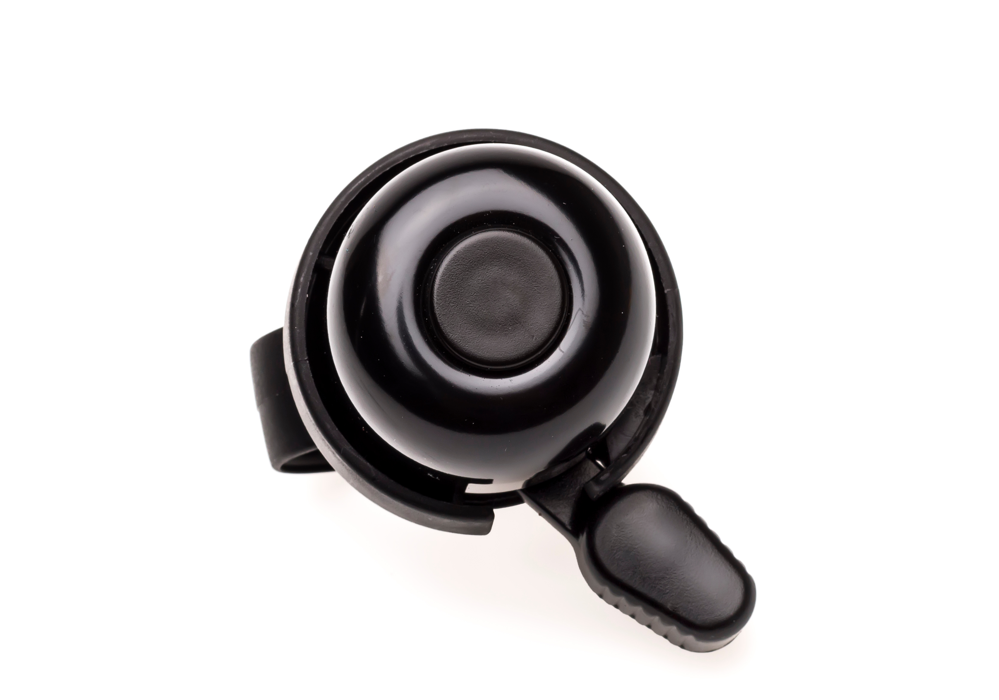
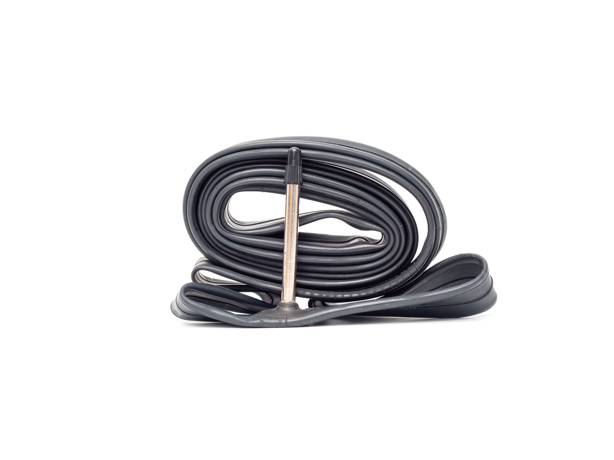

AnyCompany bicycle parts |
|---|
 Cassette $50.00 |
 Crankset $215.00 |
 Chain $35.00 |
|---|---|---|
|  Bell $18.00 |
 Gear shifter $32.00 |
 Inner tube $14.00 |
Do you need help installing your bicycle replacement parts, or does your bike need adjustment? We can help with that. Call one of our store locations to schedule an appointment and get a service quote.
Our experienced service technicians have passed a rigorous certification program with industry-wide recognition.
We offer a wide variety of services, including:
We specialize in custom bike builds to meet your specific needs. Tell us which types of conditions you plan to do most of your riding in, and our service technicians can recommend the types of frames, tires, and groupsets that are most suitable for those environments.
Address:
100 Anywhere Street, Anytown, USA
Phone:
555-0100
Hours:
Mon-Fri 7 a.m.-7 p.m.
Sat 8 a.m.-6 p.m.
Sun Closed

AnyCompany was founded by a group of friends who share a passion for bicycling, and they all agree that it is always a great day to bike!
Inspirational photo© 2024, Amazon Web Services, Inc. or its Affiliates. All rights reserved.